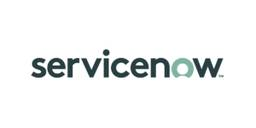
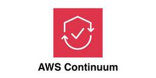

TechHarmony
https://blog.usize-tech.com
エンジニアブログ by SCSK
フィード

Claude認定5資格に合格！CCDV-Pの難易度と試験対策【最終回】
TechHarmony
こんにちは、関根です。 Claude認定シリーズの第4回です。第1回のCCAO-F、第2回のCCDV-F、第3回のCCAR-F・CCAR-Pに続いて、今回はDeveloperのProfessional（CCDV-P）を受 […]
1日前

AI同僚とどう関わる？ServiceNow World Forum 2026で考えた、AIと人間のこれから
TechHarmony
こんにちは、SCSKの三浦です。 2026年10月27日・28日の2日間に渡り、「ServiceNow World Forum 2026」が開催されました。 WFT参加レポートをお届けします！ 開催概要 今 […]
2日前

【Catoクラウド】Alert Policyでイベントを検知、通知する
TechHarmony
Catoクラウドで、イベントの連続発生や通信状況の逼迫といった、指定した条件を満たしたタイミングでイベント出力や自動通知を行う方法を紹介します。 はじめに：Catoクラウドの運用と通知 Catoクラウドはネットワーク機能 […]
2日前

AI時代のサイバー攻撃と問われる「可用性経営」――信用失墜リスクをどう捉えるか
TechHarmony
こんにちは。ＳＣＳＫ 池田です。 ランサムウェアによるクラウド基盤の停止、巧妙化する不正アクセス、そこから広がる個人情報の漏えい。特に2026年10月以降、日本国内を対象にしたセキュリティ事案の報道が相次いでいます。 各 […]
2日前

Zabbix Conference Japan 2026に参加しました！
TechHarmony
こんにちは。SCSKの木下です。 2026年11月19日・20日、東京ポートシティ竹芝 ポートホールで開催された「Zabbix Conference Japan 2026」に参加してきました！ 今年も会場では、Zabbi […]
2日前

[新入社員がGoogle Cloudを触ってみた]Gemini × Text-to-Speech で技術記事を「2人掛け合いラジオ」にするWebアプリを作ってみた
TechHarmony
こんにちは！今年度から入社しました、SCSKの松浦です。 配属されてから業務や自己研鑽を通してGoogle Cloudの学習を進めていますが、日々の業務の中で感じていることの一つに、 「技術記事やGoogle Cloud […]
3日前

【Cortex Cloud】SSPM機能が追加！クラウドとSaaSのリスクをまとめて管理
TechHarmony
クラウド環境のセキュリティ対策では、AWSやAzure、GCPなどのクラウドだけを見ていればよい、という時代ではなくなってきました。 Microsoft 365やSalesforceなど、多くのSaaSが日常的に利用され […]
3日前

ランサムウェアに感染したらどうする？初動対応から復旧まで企業がやるべきことを解説
TechHarmony
「突然ファイルが開けなくなった」「画面に身代金を要求するメッセージが表示された」 もし自社でランサムウェア被害が発生したら、何から対応すればよいでしょうか。 ランサムウェア対策では、感染を防ぐためのセキュリテ […]
3日前

AI時代のマイクロセグメンテーション再考：従来型メカニックモデルからの脱却とモダンセグメンテーションの真価
TechHarmony
従来型のレガシーマイクロセグメンテーションと次世代型のモダンマイクロセグメンテーションを比較し、現代のサイバー脅威に対抗するためのアプローチを解説します。レガシーセグメンテーションは、多大な人的リソースや専門コンサルタン […]
4日前
Cortex CloudのAI Agentとは？設定方法・特徴・使い方を実際に試して解説
TechHarmony
こんにちは。SCSKセキュリティーの辻です。 Cortex Cloudには、生成AIを活用してセキュリティ運用や調査を支援するAI Agent機能があります。 AI Agentでは、自然言語で質問することで、クラウド環境 […]
4日前
【Google Cloud】Knowledge Catalogを使ってみた① Business GlossaryとRelated機能
TechHarmony
こんにちは！SCSKの森戸です。 近年、生成AIやAIエージェントの活用が広がる中で、企業が保有するデータをAIに利用させる取り組みが増えています。その際に、単にデータをAIに渡すだけではなく、「そのデータが業務上どのよ […]
4日前

【AWS・クラウドアーキテクチャ設計編#2】LifeKeeperはなぜフェイルオーバーしたのか？ IP・ファイルシステム監視から学ぶ設計の落とし穴
TechHarmony
LifeKeeperの『困った』を『できた！』に変える！ Season 2 サポート事例から学ぶ設計・運用ベストプラクティス こんにちは、SCSKの前田です。 いつもTechHarmonyをご覧いただきありがとうございま […]
4日前
Claude認定 CCAR-F・CCAR-P 合格体験記｜2つのArchitect試験を受けてみた【第3回】
TechHarmony
こんにちは、関根です。 Claude認定シリーズの第3回です。第1回のCCAO-F、第2回のCCDV-Fに続いて、今回はArchitectのFoundations（CCAR-F）とProfessional（CCAR-P） […]
5日前

AWS Continuum for code vulnerabilitiesで脆弱性検知を試してみた
TechHarmony
こんにちは、ひるたんぬです。 最近は気温も下がってきて、いよいよ冬。という感じがしてきましたね。 飲み物も温かいものを飲む機会が増えてきたのですが、「白湯（さゆ）」ってありますよね。そう、温かいお水。 なぜ「白い」湯なの […]
5日前

LifeKeeper for Linuxでスプリットブレインを発生させてみた。
TechHarmony
こんにちは、SCSKの伊藤です。 クラスタシステムを使用する上で特に注意したいのがスプリットブレイン。 スプリットブレインが発生した場合の業務影響は、正直考えたくないほどです。 本記事では、LifeKeeper for […]
8日前
CloudWatch Agent停止時のCloudWatch アラーム遅延を検証してみた
TechHarmony
はじめに お疲れ様です。SCSKの大原です。 以前、CloudWatch Agentを使用してプロセスを監視していると、気になる事象が発生しました。 CloudWatch Agent自身を停止した場合、通常の監視対象プロ […]
10日前
CloudWatch Agentで必要なログだけをCloudWatch Logsへ送信する方法
TechHarmony
はじめに お疲れ様です。SCSKの大原です。 CloudWatch Logsでログをすべて送信していると、確認したい情報が埋もれやすくなります。 また、不要なログの送信を減らすことは、コスト削減にもつながります。 実際に […]
10日前
【AWS・クラウドアーキテクチャ設計編#1】Route53？Route Table？NLB？AWSで失敗しないLifeKeeper構成選定術
TechHarmony
LifeKeeperの『困った』を『できた！』に変える！ Season 2 サポート事例から学ぶ設計・運用ベストプラクティス こんにちは、SCSKの前田です。 いつもTechHarmonyをご覧いただきありがとうございま […]
11日前
ランサムウェアは「暗号化」だけじゃない？ ― 2026年・二重恐喝時代に効く“実行前”防御という答え
TechHarmony
みなさん、こんにちは。SCSKの石井です。 先日、久しぶりに会った友人から「最近ってどんな攻撃が多いの？」と聞かれました。反射的に「暗号化しないやつ、ですね」と答えたところ、返ってきたのは「じゃあ壊れてないじゃん」の一言 […]
11日前
LifeKeeperのIISリソースはなぜ待機系もサービスが実行中なのか？
TechHarmony
こんにちは SCSK 野口です。 WindowsサーバーでWebサービスを運用する際、標準的なWebサーバーとして広く利用されているのが IIS（Internet Information Services） です。このI […]
11日前
マイクロセグメンテーション失敗の「5つの罠」を克服する次世代セキュリティアーキテクチャの実践ガイド
TechHarmony
ランサムウェア被害を受けた企業や自治体で導入が行われていなったのは、”ネットワーク分離”つまり ”マイクロセグメンテーション”です。 第一世代のレガシーマイクロセグメンテーションでは、多くのプロジェクトが失敗・頓挫してい […]
12日前
Ansibleを使用してNW機器設定を自動化する（FortiGate-サービスグループ編②）
TechHarmony
当記事は、前回の記事「Ansibleを使用してNW機器設定を自動化する（FortiGate-サービスグループ編①）」からの改善となります。 設定情報がベタ書きで使い勝手が悪い点 を 設定情報をまとめてINPUT（JSON […]
12日前
Microsoft 365大規模障害から学ぶデジタルレジリエンスとゼロトラスト戦略の再検討：単一クラウド依存の致命的盲点
TechHarmony
現代の企業や公共機関の業務インフラは、特定のハイパースケーラーのパブリッククラウドの上に成り立っています。電子メール、チャット、ファイル共有からセキュリティ、アイデンティティ管理に至るまで、単一のクラウドプラットフォーム […]
12日前
Claude認定 CCDV-F 合格体験記｜普段のアプリ開発と共通すること【第2回】
TechHarmony
こんにちは、関根です。 Claude認定シリーズの第2回です。前回のCCAO-Fに続いて、今回は開発者向けの「Claude Certified Developer – Foundations（CCDV-F）」を受けてきま […]
12日前
【New Relic】New Relic Browser導入前の確認ポイントと主な機能
TechHarmony
New Relic Browserでは、Webサイトを利用する実際のユーザーのブラウザからパフォーマンスデータを収集し、ページの表示速度、Core Web Vitals、JavaScriptエラーなどを可視化できます。W […]
16日前
【2026年最新】AIOps 2.0と自律型IT運用の最前線：AI SRE Agent・自己修復インフラが変えるIT運用の未来
TechHarmony
AIの進化により、従来のAIOps（1.0）から、LLMや因果AI、深層強化学習を活用した新たな”AIOps 2.0”へ進化が非常に早いスピードで進んでいます。自律型AIエージェントによる自己修復インフラの導入など、自律 […]
17日前
AWS Network Firewall の Route 53 解決済み IP 検証（Resolved IP validation）を試してみた
TechHarmony
はじめに 2026年10月21日に、AWS Network Firewall が Route 53 解決済み IP 検証（Resolved IP validation）に対応しました。Network Firewall で […]
18日前
【2026年】Deep InstinctとEPP・EDRの違い｜「検知」と「実行前予防」は、何が違うのか
TechHarmony
みなさん、こんにちは。SCSKの石井です。今日もお付き合いください。 「EPPとEDRの違いは分かっている。でも、Deep Instinctはどっちなの？」 これ、ここ1年で本当に増えました。しかも嬉しいことに、聞いてく […]
18日前
Claude認定 現行4資格を全部取ってみた（CCAO-F / CCDV-F / CCAR-F / CCAR-P）
TechHarmony
SCSKの今野です。 以前、AWS認定の全冠について書きましたが、今回はAnthropic社のClaude認定資格です。2026年11月時点で提供されている4資格すべてに合格したので、各試験の印象、難易度の体感、受験する […]
18日前
フロンティアAI時代の「大量個人情報漏えい」「脆弱性爆発」に立ち向かう「多層防御」「ゼロトラスト」への取り組みについて
TechHarmony
連日サイバー攻撃による不正アクセスやランサムウェア被害による個人情報漏えい、あるいはPHPなどの脆弱性に関連するニュースが後を絶ちません。個人情報保護委員会は、2026年4月〜10月16日に累計約2億6,000万人分、日 […]
18日前
Generic Applicationスクリプト用のPowerShellテンプレートを使ってみよう！
TechHarmony
こんにちは、SCSKの伊藤です。 LifeKeeper for Windows v10.1の新機能として、Generic ARK用のPowerShellテンプレートが追加されました。 本記事では、このPowerShell […]
19日前
OpenSSH認証バイパス脆弱性「sshole (CVE-2026-123158)」徹底解説、10年間見落とされた盲点と即時攻撃の防衛策について
TechHarmony
軽量かつ攻撃表面（アタックサーフェス）が少ないため、コンテナやマイクロサービスアーキテクチャの標準ベースイメージとして圧倒的支持を集めてきたAlpine Linuxですが、2026年11月5日、その足元を大きく揺るがす極 […]
19日前
code-server に Kiro CLI と Kiro Crew を同居させ Amazon Cognito で MFA 認証をさせる – SSM ドキュメント実装編
TechHarmony
こんにちは、広野です。 以前、code-server を nginx で HTTPS 化して Amazon Cognito で MFA 認証をさせる構成を紹介しました。本記事では、同じ Amazon EC2 インスタンス […]
19日前
Claude認定 CCAO-F 合格体験記｜受験の感想とClaude機能のおさらい【第1回】
TechHarmony
こんにちは、関根です。 AnthropicのClaude認定試験「Claude Certified Associate – Foundations（CCAO-F）」を受けてきました！ せっかくなので、今回を第1回として、 […]
20日前
ServiceNow World Forum Tokyo 2026に行ってきた！現地レポート
TechHarmony
ServiceNow World Forumは、ServiceNowの最新情報や活用事例、これからの展望などに触れられるイベントです。 普段ServiceNowに携わっている方はもちろん、ServiceNowを導入してい […]
22日前
【徹底比較】サイバー復旧の視点でバックアップ製品を本音で考えてみた
TechHarmony
「昨夜もバックアップジョブは100%成功しました。ログに異常はありません」——情シスやインフラ担当者にとって、これほど安心する報告はありません。しかし、近年のランサムウェアや標的型攻撃の現場では、この安心が最も危険な油断 […]
22日前
最新のZabbix 8.0 LTSをLinuxサーバーにインストールしてみた
TechHarmony
こんにちは、SCSKの坂木です。 2026年11月5日、Zabbixの最新LTSバージョンとなるZabbix 8.0 LTSがリリースされました。 今回は、早速Amazon Linux 2023上にZabbix 8.0 […]
23日前
なぜ「ゼロトラスト先進企業」のサプライチェーンで事故は起きたのか？ — 委託先侵入事案に見るアイデンティティ＆データ統制の死角と実務対策
TechHarmony
国内大手ITベンダーの委託先がサイバー攻撃を受け、大阪公立大学や大阪大学で大量の個人情報漏えいや基盤システム停止により授業の休講、入試・大学院出願期日の延長など深刻な被害が発生しています。「ゼロトラスト成熟度モデル（米C […]
23日前
code-server に Kiro CLI と Kiro Crew を同居させ Amazon Cognito で MFA 認証をさせる – EC2 インスタンス実装編
TechHarmony
こんにちは、広野です。 以前、code-server を nginx で HTTPS 化して Amazon Cognito で MFA 認証をさせる構成を紹介しました。本記事では、同じ Amazon EC2 インスタンス […]
24日前
デジタル庁運営委託先クラウドサービスの不正アクセス事案から学ぶSaaSサプライチェーンリスクと堅牢なシステム設計
TechHarmony
デジタル庁が運営委託を行っていたWebサイト制作プラットフォームのクラウドが第三者による不正アクセスを受け、登録者アカウントや外部サービスのAPIキー、顧客サイトのフォーム送信内容などが外部へ流出した可能性があることが報 […]
24日前
次世代セキュリティプラットフォーム「Intezer」の全貌：遺伝子解析と自律型AI SOCが変革するセキュリティ運用
TechHarmony
フロンティアAI時代のサイバー攻撃に対抗するため、AIを活用した次世代SOCサービス「AI SOCサービス」の提供を開始しました。このサービスは、独自の遺伝子マルウェア分析（生物の免疫システムの概念をマルウェア分析へ再現 […]
24日前
code-server に Kiro CLI と Kiro Crew を同居させ Amazon Cognito で MFA 認証をさせる – Cognito 実装編
TechHarmony
こんにちは、広野です。 以前、code-server を nginx で HTTPS 化して Amazon Cognito で MFA 認証をさせる構成を紹介しました。本記事では、同じ Amazon EC2 インスタンス […]
1ヶ月前
Amazon QuickからクロスアカウントAuroraへ接続してみた
TechHarmony
こんにちは、まつほです。 前回、Amazon Quickでコスト分析をしてみる記事をアップしました。 しかし、どうせなら都度CSVを取得するのではなく、Auroraに蓄積したコストデータを使って分析したい！ というわけで […]
1ヶ月前
人が解けなかったAWSのトラブルをKiroは解決できるのか？ ― AIエージェントの実力を試してみた
TechHarmony
皆さんこんにちは！ SCSK株式会社の安藤です。 チームで画面を見ながら原因を探しても、何が悪いのかわからない。そんなAWSのトラブルを、AIエージェント「Kiro」に任せたらどうなるのか。その答えを、実際に体験する機会 […]
1ヶ月前
code-server に Kiro CLI と Kiro Crew を同居させ Amazon Cognito で MFA 認証をさせる – アーキテクチャ編
TechHarmony
こんにちは、広野です。 以前、code-server を nginx で HTTPS 化して Amazon Cognito で MFA 認証をさせる構成を紹介しました。 code-server を nginx で HTT […]
1ヶ月前
「AI攻撃 vs マイクロセグメンテーション」自律型AIによる攻撃の実態と、ラテラルムーブメントを断つマイクロセグメンテーションの真価
TechHarmony
フロンティアAIによって高度化・高速化・広範囲化されたサイバー攻撃が後を絶たないですが、アンソロピック（Anthropic）社のサイバー検証プログラム（Cyber Verification Program）への参加を通じ […]
1ヶ月前
仮想専用サーバーサービスの不正アクセス事案から学ぶインフラ設計の落とし穴と「能動的サイバー防御」時代のセキュリティ教訓
TechHarmony
2026年9月より不正アクセス・情報漏えい事案が相次いでいますが、某インターネット企業の仮想専用サーバー（VPS）サービスへの不正アクセスは「認証」と「認可」のタイムラグの構造的な課題を浮き彫りにしました。エンドユーザの […]
1ヶ月前
AWS と Vanilla JS で問い合わせフォーム付き静的 WEB サイトをつくる
TechHarmony
こんにちは、広野です。 以前、以下の記事を書きました。 https://blog.usize-tech.com/serverless-webform-on-aws/ その当時からだいぶ時間が経っていたので、セキュリティ対 […]
1ヶ月前
ISMAP認定クラウドサービス障害の教訓：認証依存リスクの解体とサプライチェーンBCPの再設計
TechHarmony
日本国内のクラウドサービスが、ランサムウェア被害を受け、多くの企業・自治体のサービスに甚大な障害が発生しました。JR東日本の会員向けメール配信サービスなどで一時的な不具合が生じ、個人情報の漏えい可能性や管理ポータルでの不 […]
1ヶ月前
APTは「どこの国」の仕業か？ ディープラーニングがマルウェアを94.6%で見分けた実験
TechHarmony
みなさん、こんにちは。SCSKの石井です。 先月、あるお客様のCSIRT責任者から、こう聞かれました。 「この攻撃、どこの国なんですか」。 私は即答できませんでした。ログにも検体にも、犯人の国籍は書いていないからです。 […]
1ヶ月前